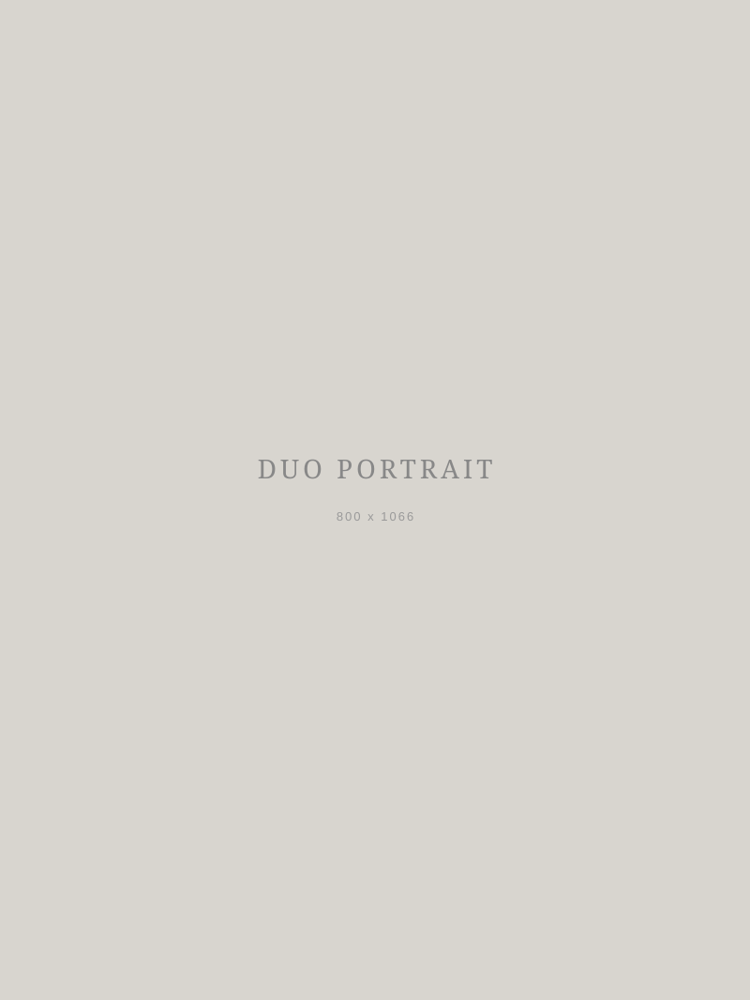
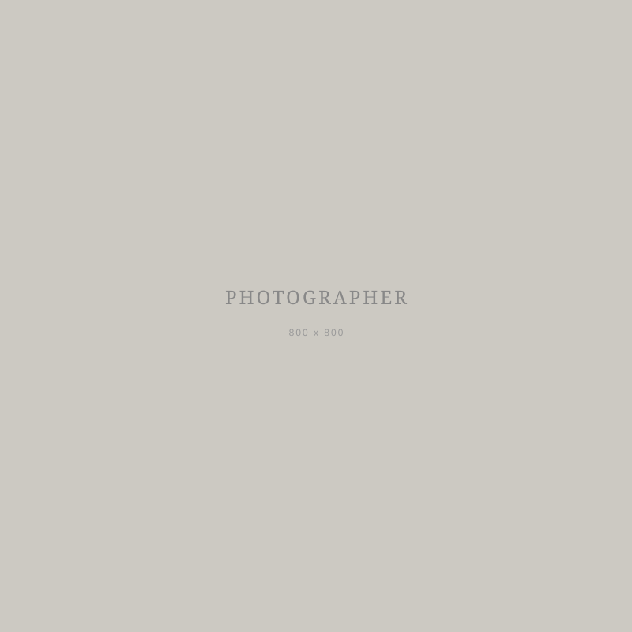
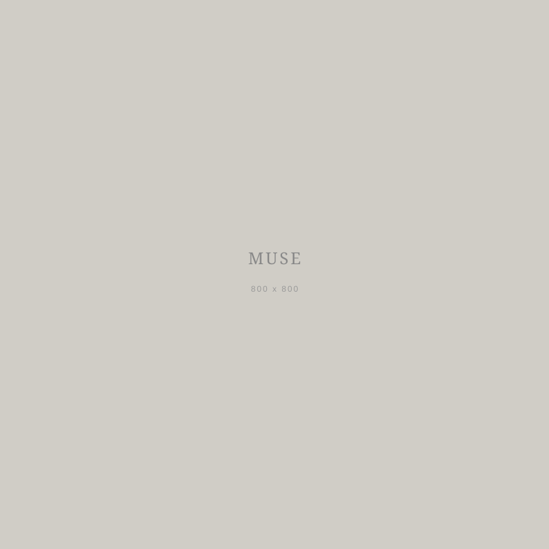

About

Our Story
UnconventionArt was born from an encounter — a photographer searching for a new visual language and a muse seeking to transcend the boundaries of traditional posing. What began as a single experimental shoot became an ongoing artistic partnership.
Our work lives in the space between direction and spontaneity, between concept and instinct. We believe the most honest images emerge when both artists are fully present — when the camera becomes a bridge rather than a barrier.
Based in Italy, we work across fine art, conceptual, and editorial photography. Our collaborative process is built on trust, improvisation, and a shared fascination with light, texture, and the human form in unconventional contexts.

Photographer
A self-taught photographer drawn to the interplay of light and shadow, decay and beauty. Influenced by the textures of Italian architecture and the stillness of abandoned spaces. Shoots primarily with natural light, favoring the quiet tension of early morning and late afternoon.

Muse & Model
A visual artist in her own right, she brings an instinctive understanding of movement, emotion, and space to every collaboration. Her presence in front of the camera is not passive — it is a creative act, shaping each image through gesture, stillness, and the courage to be truly seen.
"The best work happens when we forget who is directing and who is being directed. In those moments, the image creates itself."
UnconventionArt
Our Approach
We work without mood boards. Each series begins with a location — a space that speaks to us — and evolves organically through improvisation. The photographer responds to the muse's movement; the muse responds to the light and the lens. The result is work that feels discovered rather than constructed.
Post-production is minimal. We believe in the integrity of the captured moment — color grading is subtle, retouching is restrained. What you see is very close to what was there.
Our work has been featured on Kavyar and various independent publications. We are available for editorial collaborations, gallery exhibitions, and commissioned projects.